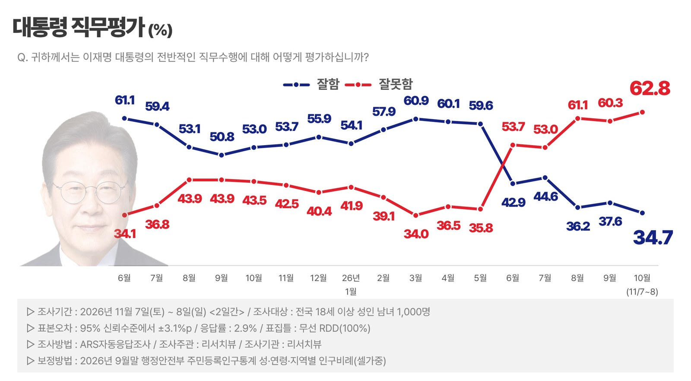
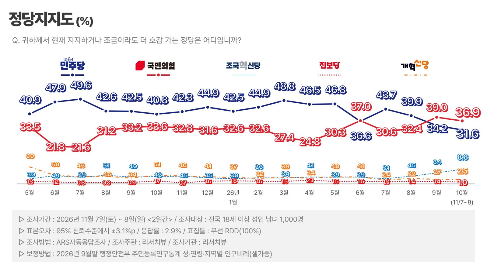
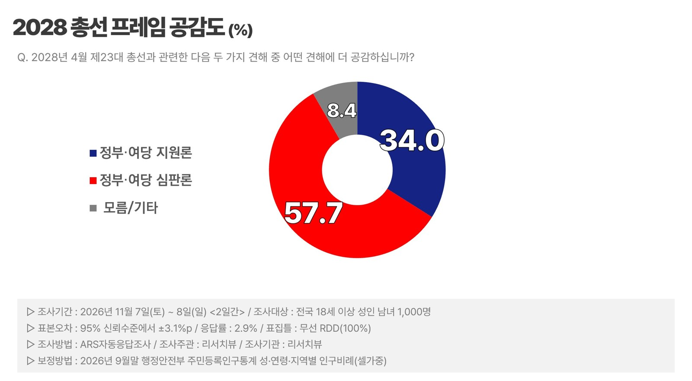
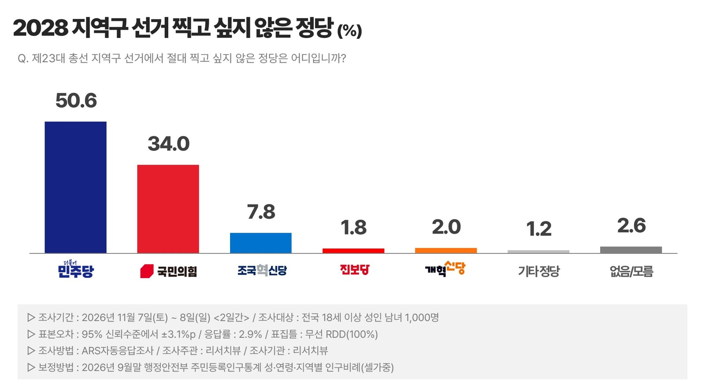
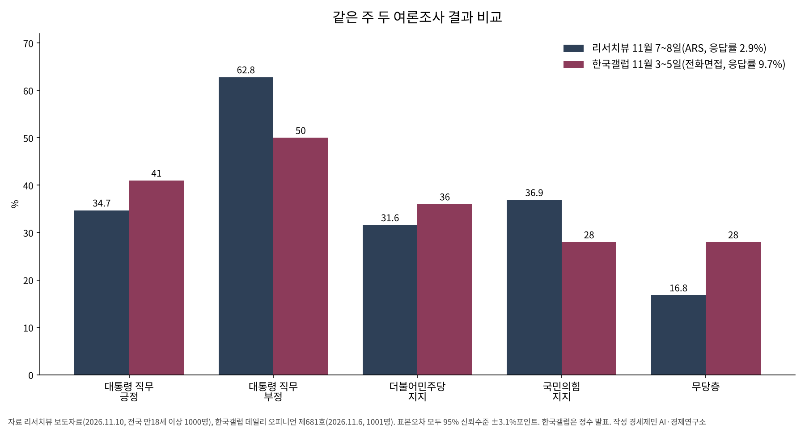

대통령 긍정률 35%, 취임 뒤 <리서치뷰> 조사 최저
부정률 62.8%로 최고, 50대 긍정률 13.6%포인트 급락
2028총선 심판론 57.7%, 지원론과 격차 23.7%포인트
국민의힘 36.9%·민주당 31.6%, 무당층 16.8%
AI경제저널=김갑봉 기자 | 이재명 대통령 직무수행 긍정률이 34.7%로 떨어졌다. 여론조사전문기관 리서치뷰가 11월 7~8일 만 18세 이상 1000명에게 물은 결과다. 9월 말 조사보다 2.9%포인트 낮다. 부정률은 62.8%로 2.5%포인트 올랐다. 리서치뷰 정기조사에서 긍정률은 취임 뒤 가장 낮고 부정률은 가장 높다.
이번 조사는 10월 말 정기조사를 대신했다. 리서치뷰는 대통령 긍정률과 민주당 지지율, 총선 지원론이 함께 내려가고 민주당 비토율은 과반으로 올라 여권에 불리한 흐름이 이어졌다고 분석했다. 다만 국민의힘 지지율도 내려가고 무당층이 늘어, 여권을 향한 부정 평가가 국민의힘 지지 확대로 곧장 이어지지는 않았다고 덧붙였다.

긍·부정 격차 28.1%포인트로 벌어져
직무수행 평가는 잘함 34.7%, 잘못함 62.8%다. 무응답은 2.4%다. 부정이 긍정보다 28.1%포인트 많다. 9월 격차 22.7%포인트에서 5.4%포인트 커졌다(AI경제저널 계산). 강한 부정인 「매우 잘못함」은 55.7%로 취임 뒤 가장 높았다.
50대에서 크게 흔들렸다. 50대 긍정률은 9월 51.4%에서 37.8%로 13.6%포인트 내려가 부정이 앞섰다. 같은 기간 50대 민주당 지지율도 17.8%포인트 빠졌다.
국민의힘 36.9%, 민주당 31.6%, 조국혁신당 8.6%
정당지지도는 국민의힘 36.9%, 더불어민주당 31.6%, 조국혁신당 8.6%, 개혁신당 2.5%, 진보당 1.0% 순이다. 기타 정당은 2.7%, 무당층은 16.8%다.
두 거대 정당이 함께 내려갔다. 9월보다 민주당은 2.6%포인트, 국민의힘은 2.1%포인트 떨어졌다. 두 당 격차는 4.8%포인트에서 5.3%포인트로 조금 벌어졌다. 이 격차는 오차범위 안이다. 조국혁신당은 2.2%포인트 올라 2024년 10월(10%) 뒤로 가장 높았다.

총선 심판론 57.7%, 민주당 비토율 50.6%
2028년 4월 제23대 총선을 두고 「정부·여당을 심판해야 한다」는 응답이 57.7%, 「정부·여당에 힘을 실어줘야 한다」는 34.0%다. 무응답은 8.4%다. 9월보다 심판론은 4.9%포인트 오르고 지원론은 4.0%포인트 내렸다. 격차는 23.7%포인트로 8.9%포인트 커졌다. 중도층에서도 심판론이 56.1%로 9월 49.9%에서 과반으로 올라섰다.

지역구 선거에서 절대 찍고 싶지 않은 정당은 더불어민주당 50.6%, 국민의힘 34.0%, 조국혁신당 7.8%, 개혁신당 2.0%, 진보당 1.8% 순이다. 민주당 비토율은 9월보다 1.5%포인트 오르고 국민의힘은 1.7%포인트 내렸다. 두 당 비토율 격차는 13.4%포인트에서 16.6%포인트로 커졌다. 민주당 비토율이 과반을 넘은 것은 8월 조사 뒤 처음이다.

같은 주 한국갤럽은 긍정 41%
같은 시기 다른 조사와는 수치 차이가 크다. 한국갤럽이 11월 3~5일 만 18세 이상 1001명에게 전화조사원 인터뷰로 물은 자체 조사에서 대통령 직무 긍정률은 41%, 부정률은 50%였다. 직전 조사보다 긍정은 2%포인트, 부정은 1%포인트 올랐다. 정당지지도는 더불어민주당 36%, 국민의힘 28%, 조국혁신당 3%로 두 거대 정당 순위가 리서치뷰와 반대였다. 무당층은 28%다.
두 조사는 방식이 다르다. 한국갤럽은 조사원이 직접 묻는 전화면접이고 응답률은 9.7%다. 리서치뷰는 자동응답 ARS이고 응답률은 2.9%다. 리서치뷰 조사는 한국갤럽보다 나흘 늦게 시작했다. 표본오차는 둘 다 95% 신뢰수준에 ±3.1%포인트다.

여론조사 개요
※리서치뷰 조사는 자체 정기조사로 11월 7~8일 만 18세 이상 휴대전화 가입자 1000명을 대상으로 무선(100%) 무작위 전화걸기(RDD) 자동응답(ARS) 방식으로 진행됐다. 2026년 9월 말 주민등록인구 기준으로 성·연령·지역별 가중치(셀가중)를 줬다. 응답률은 2.9%, 표본오차는 95% 신뢰수준에서 ±3.1%포인트다.
※한국갤럽 조사는 자체 조사로 11월 3~5일 만 18세 이상 1001명을 대상으로 이동통신 3사 무선전화 가상번호를 무작위로 뽑아 전화조사원 인터뷰(CATI) 방식으로 진행됐다. 접촉률은 40.8%, 응답률은 9.7%, 표본오차는 95% 신뢰수준에서 ±3.1%포인트다.
자세한 내용은 리서치뷰·한국갤럽 또는 중앙선거여론조사심의위원회 누리집에서 확인할 수 있다.
참고문헌
- 리서치뷰, 「2026년 정치현안 정기조사 보도자료」(조사기간 2026.11.7~8), 2026.11.10. https://blog.naver.com/99061
- 한국갤럽, 「데일리 오피니언 제681호(2026년 11월 1주)」, 2026.11.6. https://www.gallup.co.kr/gallupdb/fileDownload.asp?seqNo=1666&bType=8
사진 출처
- [차트 넷] 리서치뷰, 「2026년 정치현안 정기조사 보도자료」 차트(대통령 직무평가·정당지지도·2028 총선 프레임 공감도·지역구 찍고 싶지 않은 정당), 2026.11.10
- [도표] AI경제저널 작성, 자료 리서치뷰 보도자료(2026.11.10), 한국갤럽 데일리 오피니언 제681호(2026.11.6)
저작권자 © AI경제저널 무단전재 및 재배포, AI학습 및 활용 금지